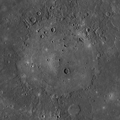

Mercury seen from MESSENGER
Mercury is the smallest and closest planet to the Sun in the Solar System.
Mercury is an inferior planet to Earth and similarly to Venus, it can only be seen as a morning or an evening "star" in the Earth sky.
It is named after the Roman god of commerce and the messenger of the gods.
Mercury is so close to the sun that it rotates in a 3:2 spin-orbit resonance with the Sun.
This also means that one Mercurian day takes two revolutions around the Sun.
It has the smallest axial tilt of all planets in the Solar System at 0° 2'.
The planet's surface is covered with craters and has no atmosphere.
The temperatures on Mercury range from 100 K to 700 K.
There are also evidence of some ice water at the poles.
Mercury has no natural satellites.
Two spacecrafts have visited Mercury - Mariner 10 and MESSENGER. A third, BepiColombo, is an ongoing mission, which will enter an orbit in 2026.
The planet was known since ancient times and had different names as a morning and an evening star.
The ancient Greeks had realised that the two are a single object.
It was named after Hermes, the swift-footed messenger god, for it's fast movement across the sky.
The Romans gave it the name "Mercurius", which is the name of Hermes's analogue in Roman mythology.
Orbit and rotation
Mercury has a 3:2 spin-orbit resonance in relation to the fixed stars.
One Mercury solar day thus equates to two Mercury years.
In Earth days, one synodic day is almost 176 Earth days, which is three times the sidereal day and the orbital period is 88 days.
Mercury has a very low axial tilt of 1/30 degrees.
Mercury has the highest eccentricity of the planets in the Solar System at 0.21.
The perihelion is 0.307 AU and the aphelion is 0.466 AU.
Mercury is the smallest planet in the Solar system.
It has an equatorial radius of 2,440 km.
Two natural satellites in the Solar System, Ganymede and Titan, are larger than Mercury, but have a small mass.
Mercury is a terrestrial planet, consisting of 30% silicates and 70% metallic material, primarily iron.
This makes it particularly unique due to its high metal composition.
The main reason behind it is that the planet formed much closer to the Sun, where most of the heaviest elements in the protoplanetary disc were concentrated.
The planet’s outermost layer, the crust, along with the underlying mantle, is mainly made up of silicates.
Beneath these layers lies Mercury’s massive core, which is proportionally larger than that of any other planet in the solar system (57% of the planet's volume, compared to Earth's 17%).
The core's composition remains uncertain, but it is thought to feature an outer layer of iron sulfide, a middle layer of liquid iron, and an inner solid iron core.
The high amount of iron makes Mercury the second densest planet after Earth.
The density of Mercury's materials is also greater than those of Earth's if gravitational compression isn't taken into consideration.

Mercury's largest impact crater Caloris Planitia
Mercury surface closely resembles that that of many less active rocky worlds like the Moon, marked by craters and plains.
The largest crater is the 1550 km wide Caloris Basin, which is surrounded by a 2 km tall concentric ring.
The antipode of Caloris is a hilly terrain, known as the "Weird Terrain", likely created from the impact.
Similar impact basins include Tolstoj and Beethoven Planitia.
Many younger craters display bright ray systems.
They appear as bright strokes radiating from the crater, fading away with time.
Permanently shadowed craters at Mercury’s poles harbor deposits of water ice, a discovery confirmed by radar observations and data from the MESSENGER spacecraft.
The ice was most likely brought by comets that impacted the surface.
Although Mercury is not volcanically active today, evidence of past volcanic activity is visible.
Shield volcanoes, lava flows, and pyroclastic deposits indicate that volcanism might have shaped the planet’s surface during its early history.
The presence of pyroclastic flows within impact craters suggests that pyroclastic activity occurred on Mercury over a prolonged interval.
Mercury’s surface also features wrinkle ridges and lobate scarps, which are believed to have formed as the planet’s interior cooled and contracted, causing the crust to wrinkle and fracture.
Some of these "rupes" formed over craters indicating recent activity.
Despite its small size and slow rotation, Mercury has a significand and global magnetic field, generated by its partially liquid iron core.
This field is about 1.1% as strong as Earth’s and creates a small magnetosphere.
The magnetosphere interacts with the solar wind, forming a bow shock and a magnetotail.
Spacecraft observations show that Mercury’s magnetosphere is extremely "leaky", causing flux transfer events that open up holes for solar particles to directly impact the surface via magnetic reconnection.
Two missions have taken place and one is currently ongoing.
NASA's Mariner 10 was the first in 1974.
The mission objectives were to measure Mercury's environment, atmosphere, surface, and body characteristics.
It was the first mission to perform multiple planetary flybys.
MESSENGER was NASA's second mission in 2011.
Unlike Mariner 10, MESSENGER enterer Mercury's orbit.
The objectives were to explain Mercury's high density, geological history, nature of its magnetic field and structure of its core.
An ongoing mission between ESA and JAXA, called BepiColombo, was launched in 2018.
It is planned to get into Mercury orbit in November 2026.
Two probes will be released to study the planet - Mercury Planetary Orbiter, and Mercury Magnetospheric Orbiter.
So far it has made several flybys in preparation for the orbiting stage.
External links
{% include catplanets.html %}